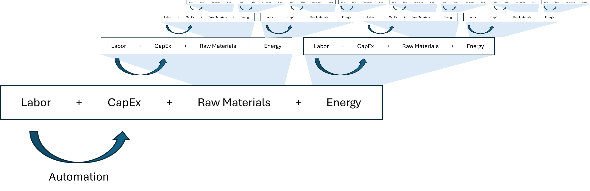

Reindustrialization from First Principles: Cost Physics
The rules for making things are fundamentally rewritten every few generations. The 1870s saw steel mills and electric grids reshape our cities. The 1910s brought assembly lines that put the world on wheels. Each time, America led the way not just by inventing new technologies, but by rearranging itself to build at scale.
Today, we stand at another such moment. Intelligence, automation, and cheap abundant energy are converging to rewrite the economics of production. Beyond industrial or trade policy, something more profound is changing: the underlying cost physics of manufacturing (coined with inspiration from Coogan’s Law.) And unlike previous technological revolutions, this transformation may be permanent – creating a lasting shift that uniquely favors American manufacturing.
For decades, we've accepted as gospel that you can't compete with low cost overseas production. We’ve been told that America’s future lies in software, services, and design, while the actual making of things belongs elsewhere. But now the four fundamental forces that govern manufacturing: raw materials, labor, capital expenditure, and energy, are being dramatically reshaped. The question isn't whether the prodigal manufacturing base will return to America rather who will build the companies that lead the return.
If you haven’t had the pleasure of reading Packy McCormick’s work on this upcoming shift (Techno-Industrial Age, Vertical Integration Series [building on the works of Perez, Schumpeter, and Neumann]), please do. He provides an excellent background on where we sit today with plenty of historical analogs. To summarize:
We're entering a new Techno-Economic Paradigm (TEP) - a shift in how things are made and businesses are built. Throughout history, these paradigm shifts have occurred roughly every 50-75 years, each marked by a constellation of new technologies that transform multiple sectors of the economy. The Industrial Revolution, the Age of Steel and Electricity, the Era of Mass Production, and most recently the Information Age - each redefined not just what we could make, but how we made things.
New TEPs create an opening for entrants who can integrate emerging technologies to build better products at lower costs and higher margins. Age of Steel and Electricity gave us Carnegie Steel and General Electric, and The Age of Mass Production was defined by Ford. These vertical integrators won by reimagining entire systems, not just segmenting and optimizing parts. Where fragmented players could only optimize their piece, these companies could make trade-offs across the entire value chain to unlock better economics system-wide.
As one TEP dawns, another ends. Today's extreme fragmentation of manufacturing, optimized purely for lowest labor cost, signals our current TEP's end. Incumbents, having spent decades fragmenting production across global supply chains, now strain under their own complexity. The opportunity ahead is immense - manufacturing, construction, chemicals, defense, agriculture await reinvention. Just as railroads created the first billion-dollar companies and the internet spawned trillion-dollar tech giants, this new TEP will likely produce multiple trillion-dollar companies that remake our industrial base.
The Four Forces of Cost Physics
But to understand why these techno-economic paradigms begin and end, and where we are today, we must understand the cost physics of manufacturing––the forces that determine where and how things get made. Just as physics explains the motion of objects through forces like gravity and friction, cost physics explains the movement of production through four forces:
- Labor: The full human cost of production - including wages, benefits, training, management overhead, and regulatory compliance.
- Capital Expenditure (CapEx): The total cost of equipment, facilities, and infrastructure over time - including initial investment, financing amortization determined by interest rates, residual values, maintenance, and depreciation.
- Raw Materials: All input costs beyond labor, capital, and energy - including base materials, logistics, storage, packaging, and waste disposal. This encompasses the complete cost of getting inputs to production.
- Energy: The power required throughout the production process - primarily electricity, but also including heating, cooling, and other process energy needs.
These forces don't simply trade off against each other in predictable ways. Instead, innovations in one area can trigger cascading changes that transform the entire cost structure of production. As these transformations compound, new techno-economic paradigms are created.
To understand where we're headed, we'll look at how past technological revolutions—from the Industrial Revolution through the Information Age—rewrote these equations. Then we'll explore why today's convergence of AI, automation, and energy innovation creates a unique and permanent shift in America's favor.
The Industrial Revolution
The Industrial Revolution was the first modern rewrite in action. Before the revolution, to make thread you needed a skilled spinner. One person, one thread at a time. Then came the spinning jenny and suddenly one worker could operate multiple spindles simultaneously. One worker was doing the job of 8 workers, then 16, then 124+ as the technology improved. The cost physics had changed.
The steam engine showed how these changes could flip multiple parts of the equation simultaneously. In the 1700s, mines had teams of workers or horses powering pumps around the clock to displace water and keep the mine from flooding. It was possible, but it took a ton of labor and limited how deeply you could go. With the advent of the steam engine, one machine could replace dozens of workers, run 24/7, and let you dig deeper than ever before. And instead of indirect photosynthesis power (food) for humans and horses, you could power it with coal––the very thing you were mining.
By the 1870s, a single steam-powered pump could do the work of 40-50 workers at a fraction of the operating cost. But the magic extended beyond the labor savings––it changed what was possible. Deeper mines meant access to previously unreachable resources, which meant lower raw material costs, reducing the cost physics equation further, resulting in lower energy costs across multiple industries.
The Age of Steel and Electricity
The Age of Steel & Electricity transformed cost physics at an unprecedented scale. Consider the Bessemer Process: where traditional cementation produced just 3 tons of steel per week at a cost of $56 per ton, Bessemer's innovation could generate 30 tons per hour at just $15 per ton––a staggering 1,500x+ improvement in output. The converter demanded massive upfront capital–around $100,000 in 1860s dollars – yet was quickly recouped as a single Bessemer plant with 15 workers could produce more steel in a day than a cementation furnace made in months while using a fraction of the labor and energy per ton.
The electrification of factories delivered another system-wide transformation. In the steam-powered factory of 1870, power flowed from a single massive engine through an intricate network of leather belts and iron shafts––Carnegie's Edgar Thomson works required over 3 miles of belting and 40 dedicated mechanics just to keep the power system running. Converting to electric motors eliminated this entire mechanical layer. Each machine could now have its own power source, slashing maintenance labor by up to 75% while enabling factory layouts optimized for workflow rather than power transmission. At General Electric's Schenectady plant, the switch to electric motors reduced power consumption by 45%, cutting production costs by a third––the cost physics of the entire manufacturing process had been rewritten.
The Age of Mass Production
The Age of Mass Production brought another monumental transformation: the systematic separation of mental and physical labor. Before Ford, building an automobile was a craftsman's art––skilled workers needed years of training and took 12.5 hours to complete a single car. Ford's assembly line slashed this to just 93 minutes. The innovation: extracting the mental labor of production—the knowledge of how to build a car—and converting it into standardized machinery and process design.
This created the first true mental labor arbitrage at scale. Ford could hire untrained workers at $0.15 per hour instead of skilled craftsmen at $0.43, and have them productive within days instead of years. The cost physics change led to prices that were revolutionary: dropping from $825 in 1908 to $260 by 1925, while production soared from 10,000 to 2 million units annually. It wasn't just making cars cheaper and faster—it was turning skilled knowledge into better equipment and process, a pattern that would define manufacturing for the next century.
What Drove Transformation
Looking across these technological revolutions, a pattern emerges:
The spinning jenny, the Bessemer converter, Ford's assembly line––each transformed what was previously accomplished through human labor into a capital expenditure that increased outputs while lowering costs. This wasn't a coincidence; it was the underlying mechanism driving each TEP's transformation of cost physics.

At its core, this automation is a bet that the amortized cost of capital equipment spread over its useful life will be lower than the labor cost it replaces. This creates structurally superior unit economics at scale that upend incumbents.
The Anomaly of the Information Age
The Information Age presents a fascinating anomaly. Unlike previous TEPs that transformed the physics of production, the Information Age primarily optimized within existing constraints. It was a revolution in orchestration rather than production transformation.
To understand why, we need to return to the Age of Mass Production's core innovation: the systematic separation of mental and physical labor. Ford's assembly line didn't just make cars more quickly—it extracted the mental labor of production (knowing how to build a car) and converted it into standardized machinery and process design. This split created two distinct tech trees of automation: mental and physical labor.
Mental labor automation focuses on decision-making, planning, and coordination—the "knowledge work" of production. This includes everything from design and engineering to inventory management and quality control. Physical labor automation, on the other hand, handles the actual manipulation and transformation of materials—the lifting, assembling, welding, and other hands-on tasks that turn raw materials into finished goods.
The Information Age doubled down nearly exclusively on the mental labor tree while letting its physical counterpart atrophy. Software gave us tools previously unimaginable to optimize and coordinate global labor arbitrage—supply chain management systems, real-time inventory tracking, and production orchestration across continents. But at the core, it was about finding and managing lower-cost human labor rather than transforming the nature of physical production itself.
The consequences were clear: industries dominated by bits (software) saw explosive growth and deflation. Areas with technological breakthroughs like solar panels, semiconductors, and televisions followed familiar cost curves, but almost everything else—the physical world of atoms—remained stubbornly inflationary. As Peter Thiel said, coming off the Ages of Steel and Mass production, “we wanted flying cars, instead we got 140 characters.”
In terms of the four forces, we built extraordinary tools to optimize labor within the constraints of the physical world, but the other underlying cost physics – raw materials, capex, and energy – remained mostly unmoved.

Today's Convergence: Why This Time Is Different
And yet, Otto von Bismark was right in saying "God has special providence for Fools, Drunkards, and the United States of America." After decades of advancing software and intelligence while our manufacturing base eroded, we've reached a remarkable turning point: the extreme advancement of the mental labor tree has finally given us tools powerful enough to unlock the physical tree once again.
Machine learning has dramatically improved how robots perceive and control their environments, while neural networks enable sophisticated motion planning that was previously impossible. Modern systems can adapt to their environment in real-time, and simulation capabilities allow rapid testing and deployment of new capabilities. For the first time, we have both the computational power to run complex AI models in real-time (intelligence) and a mature enough software stack to reliably control physical systems (dexterity). The result is a step-change in the rate at which we can convert labor to CapEx across every industry.
This compounds through our cost physics equation. Energy and raw materials, themselves products of industrial processes, are undergoing their own transformations driven by the conversion of labor to CapEx through automation. The effect is recursive and profound: we're entering an era where every component of our cost physics equation except human physical labor enters perpetual technological deflation.

A Permanent Shift
In some ways, this transformation mirrors earlier techno-economic paradigms. The fulcrum of manufacturing is shifting back to capital expenditure from labor, and like the Age of Steel, we'll see production enter deflationary spirals as capabilities increase and costs plummet.
But this transformation is different - it's likely permanent. In previous TEPs, as technologies standardized and diffused, competition inevitably gravitated toward optimizing labor costs–the most geographically arbitragable component of the cost physics equation. This led to the physical separation of supply and demand and the concentration of manufacturing in low-cost countries. But now we're approaching a paradigm that ends with near-zero human labor in production. Even after this TEP is widely diffused, the dynamics won't reverse. Once automated production achieves cost parity with manual labor, the gap will only widen as systems get smarter and more capable.
Geographic arbitrage will become irrelevant. The game will shift to optimizing for market proximity, raw materials access, and capital availability. Production will stay close to consumption, and the co-location of design, manufacturing, and end-customer will create feedback loops that only accelerate innovation further, - a dynamic already demonstrated by manufacturing hubs like Shenzhen.
This shift uniquely favors the United States with its sophisticated capital markets to finance automation (CapEx), low energy costs, plentiful raw materials, and massive consumer demand. As we hit critical mass in this "flippening", it will never flip back.
Seize the Moment
Every few generations, a window opens. The cost physics of production fundamentally shift, and those who see it clearly - who understand not just what is changing but why - have the opportunity to build something lasting. Carnegie didn't make better iron works; Ford didn't breed a faster horse. They saw that the game itself was changing and built entirely new systems to win it.
Today, we stand at another such moment. Every major industry that defined past technological revolutions is poised to be remade, and the next generation of industrial giants will emerge from those who recognize this shift and act boldly. We have a chance to reinvent the American production base, not by longing for the past, but by building the future. The only question is who will seize the moment.
--
PS, for those still reading… here’s a preview of what I’m working on, seizing the moment in one of our largest industries.
The apparel industry presents a perfect case study of both industrial exodus and potential return. Americans spend $400 billion annually on apparel yet manufacture less than 2% domestically - a statistic that confirms everything we once believed about the inevitability of offshore production. From an industrial peak of over 1,000 cotton mills to fewer than 70 today, the hollowing out appears nearly complete.
Yet examining apparel through our cost physics framework reveals something enticing. The United States is the world's fourth-largest producer, and top exporter, of cotton - the primary input material. At $0.80 per pound for American Upland cotton, the raw material in a two-pound sweater costs the same or less here than in China or India. What drove production offshore wasn't materials, energy, or even capital costs - it was pure labor arbitrage.
This makes apparel a strong opportunity in our new paradigm. Consider the scorecard:
- Raw Materials: Equal or advantaged in the U.S.
- Labor: very high, but rapidly convertible to CapEx through automation
- CapEx: Initially higher, but amortized costs approaching parity with foreign labor
- Energy: Industrial electricity rates in states like Texas compete with global lows
In other words, apparel manufacturing represents exactly the kind of transformation we've described. As labor converts to CapEx, we'll see the TEP pattern play out - costs approaching material inputs, capacity expanding dramatically, and incumbent advantages evaporating. More to come.